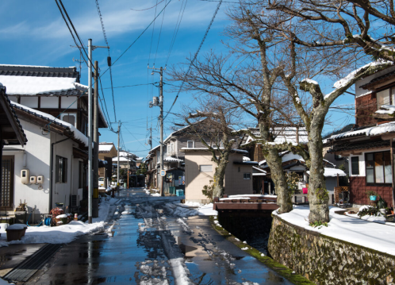

Hometown

Tottori Prefecture is the least populous prefecture in Japan, with a population of just over 570,000 people as of 2021.
Tottori Prefecture is known for its agricultural products, including pears, watermelons, and matsuba crabs.

Tottori Prefecture is also known for its hot springs, including the Kaike Onsen, Yonago Onsen, and Misasa Onsen, among others.
Tottori Prefecture is the second-largest producer of sandfish, a type of sea cucumber that is considered a delicacy in Japan.